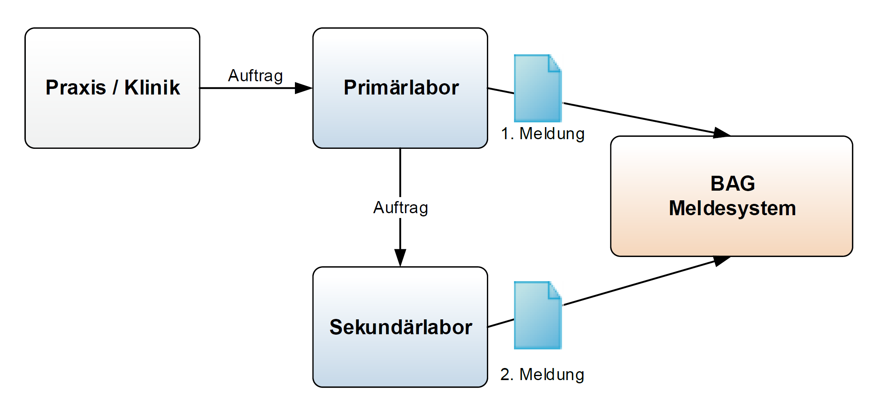

CH ELM (R4)
1.3.0 - release

CH ELM (R4)
1.3.0 - release

This page is part of the Observations of notifiable communicable infectious diseases (v1.3.0: Release) based on FHIR (HL7® FHIR® Standard) R4. The current version which supersedes this version is 1.11.0. For a full list of available versions, see the Directory of published versions
Die nachfolgenden Anwendungsfälle dienen der Illustration der Szenarien, wie sie bei meldepflichtigen Laborbefunden, die ans Bundesamt für Gesundheit übermittelt werden, auftreten. Die Fälle sollen exemplarisch die Repräsentation der Labormeldungen darstellen. Sie wurden inhaltlich und klinisch noch nicht validiert.
Dieser Meldeweg gilt für Erreger wie Neisseria gonorrhoeae, Chlamydia trachomatis und weitere.
Abb. 3: Meldeweg für den Standardfall
Herr Daniel Meier geboren am 22.08.1960, wohnhaft in 3000 Bern, konsultiert am 11.07.2023 die Ärztin Dr. Monika Giacometti am Kantonsspital. Herr Meier klagt über Juckreiz der Harnröhre und Schmerzen beim Wasserlassen. Da der Verdacht auf eine Harnwegsinfektion besteht, wird ein Abstrich abgenommen und zur Analyse an das Labor geschickt. Mittels Isolierung in Kultur wird am 14.07.2023 Neisseria gonorrhoeae nachgewiesen (LOINC 697-3). Das Labor meldet den meldepflichtigen Laborbefund dem Meldesystem des Bundesamtes für Gesundheit.
Private Dienstleister (sog. Broker), welche den meldepflichtigen Laborbefund im Auftrag des Labors an das Meldesystem des Bundesamtes für Gesundheit übermitteln, werden im FHIR-Dokument als Autor des Dokuments abgebildet.
Frau Hanna Felber, geboren am 17.10.1985, wohnhaft in 4552 Derendingen, konsultiert am 29.7.2023 ihren Hausarzt Dr. Peter Hauser in seiner Praxis in Solothurn. Frau Felber klagt über Brennen beim Wasserlösen und vaginalem Ausfluss. Da der Verdacht auf eine Harnwegsinfektion besteht, wird mit einem sterilen Verfahren eine urethrale Probe entnommen und an das Labor geschickt. Mittels Kultur wird am 4.8.2023 Chlamydia trachomatis (LOINC 6349-5) nachgewiesen. Das Labor meldet den positiven meldepflichtigen Laborbefund unter Angabe des verwendeten Probematerials (SNOMED CT 119393003) ans Bundesamt für Gesundheit.
Dieser Meldeweg gilt für Erreger wie Salmonella spp., Neisseria meningitidis und weitere.

Abb. 4: Meldeweg für Bestätigungstests
In einer Blutprobe wurden Salmonella spp. gefunden. Eine Befundmeldung geht an den Auftraggeber (Praxis/Klinik); eine 1. Meldung erfolgt an das BAG (unter Angabe der Auftragsnummer und des/ der auftraggebenden Arztes/ Klinik). Da es sich nicht um den Typ S. enteritidis handelt, wird die Probe zur genauen Typisierung an das Nationale Zentrum für enteropathogene Bakterien und Listerien („NENT“, Sekundärlabor) geschickt. Das Sekundärlabor benötigt Stammdaten zum Auftraggeber und zum Patienten, Angaben zur Herkunft der Probe (Lebensmittel, Faeces, Blut, Urin etc.), die gewünschte Typisierung und die vorangehenden Resultate. Nach erfolgter Typisierung schickt das Sekundärlabor seine Befunde (die 2. Meldung) zusammen mit der Auftragsnummer des zuweisenden Labors an das BAG.
Eine Liquorprobe wurde vom Kreisspital notfallmässig zugeschickt und direkt mikroskopisch untersucht. Es finden sich gramnegative Diplokokken. Dieser Befund zu einer Infektion mit Neisseria meningitidis muss innerhalb eines Tages gemeldet werden. Die weitere Verarbeitung (Kultur, Genomsequenz) erfolgt durch das Nationale Zentrum für Meningokokken (Sekundärlabor), von welchem wiederum eine vollständige Meldung zusammen mit der Auftragsnummer des Primärlabors an die Sektion Meldesysteme des BAG erfolgt.

Abb. 5: Meldeweg bei Weitergabe eines Laborauftrages oder bei HIV-Diagnose